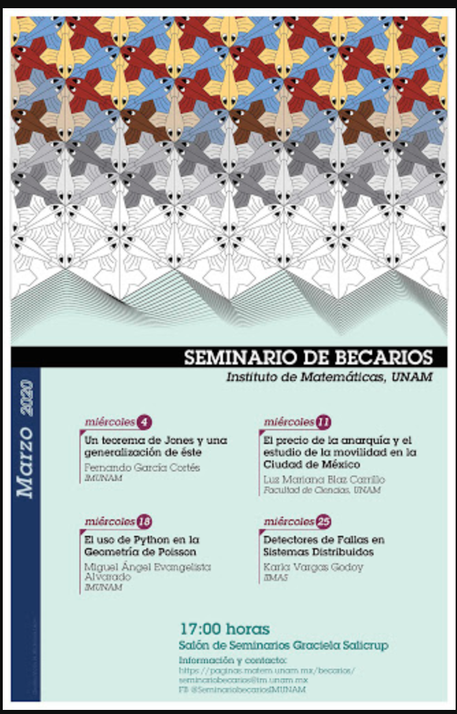

Miguel Evangelista-Alvarado

miguel.eva.alv@gmail.com
miguel.eva.alv@matem.unam.mx
I'm a mathematician and Python developer. Currently I'm Ph.D student from Dr. Pablo Suárez-Serrato at Instituto de Matemáticas-CU from UNAM in Mexico City. Also I develop software and data analysis for Prescrypto.
My main line of research is to study applications of Poisson geometry and Sympletic geometry in geometric deep learning through symbolic computation and artificial intelligence (in Python).
Publications
-
M. Evangelista-Alvarado, P. Suárez-Serrato, J. Torres-Orozco & R. Vera,
On Bott-Morse Foliations and their Poisson Structures in Dimension 3,
Journal of Singularities 19, 19-33 (2019).
PDF.
-
M. Evangelista-Alvarado, J. C. Ruíz-Pantaleón & P. Suárez-Serrato,
On Computational Poisson Geometry II: Numerical Methods,
(2020).
PDF. -
M. Evangelista-Alvarado, J. C. Ruíz-Pantaleón & P. Suárez-Serrato,
On Computational Poisson Geometry I: Symbolic Foundations,
(2019).
PDF.
-
In collaboration with J. C. Ruíz-Pantaleón y P. Suárez-Serrato, we developing NumericalPoissonGeometry module (written in Python) for local Poisson-Nijenhuis numeric calculus on Poisson manifolds.
(2020) Github, Pipy, PDF. -
In collaboration with J. C. Ruíz-Pantaleón y P. Suárez-Serrato, we developing poissongeometry module (written in Python) for local Poisson-Nijenhuis symbolic calculus on Poisson manifolds.
(2019) Github, Pipy, PDF.
- In collaboration with J. C. Ruíz-Pantaleón and P. Suárez-Serrato, we presented the mini-course "Computational Poisson Geometry" at the "Virtual Congress of the Mexican Mathematical Society" in October 2020.
Video 1, Video 2.

- I did present the talk "Poisson Structures in Bott-Morse Foliations of Dimension 3" within the "Zoom-Workshop: Geometry and Dynamical Systems" in May 2020.
Page, Video.
- In collaboration with J. C. Ruíz-Pantaleón, we did present the talk "Geometría de Poisson Computacional"within the "Zoom-Workshop: Geometry and Dynamical Systems" in May 2020.
Page, Video.
- I did present the talk "El uso de Python en la geometría de Poisson" within the "Seminario de Becarios de la IMUNAM" in March 2020.
Page.

- PhD in Mathematics Sciences - UNAM.
2020 - Currently.
PhD Director: Dr. Pablo Suárez Serrato.
- Master's Degree in Mathematical Sciences - UNAM.
2015 - 2017.
Thesis Director: Dr. Pablo Suárez Serrato.
Thesis: "Estructuras de Poisson en foliaciones de Bott-Morse de dimensión 3".
PDF. - Bachelor in Mathematics - UAGro.
2009 - 2014.
Thesis Director: Dr. Pablo Suárez Serrato.
Thesis: "Estructuras Simplécticas en fibraciones de Lesfchetz".
- Mathematics Teacher (Secondary Level).
Within the Social Program "Curso de Preparación para el Examen de Ingreso a la Educación Media Superior 2019" of the Tlalpan Delegation, CDMX in 2019. - Mathematics Teacher (Secondary Level).
Within the Social Program "Curso de Preparación para el Examen de Ingreso a la Educación Media Superior 2018” of the Tlalpan Delegation, CDMX in 2019. - Mathematics I, II, III and IV Teacher (High School Level).
CNCI University - Campus Ajusco, CDMX in 2017. - Teacher of Math Skills Workshop I and II (High School Level).
CNCI University - Campus Ajusco, CDMX in 2017. - Assistant Professor of Calculus I and II (University Level).
Professor: José Guadalupe de la Torre Suárez.
Academic Unit of Mathematics-UAGro, Acapulco, Gro. in 2014. - Assistant Professor of Analytical Geometry I and II (University Level).
Professor: Vicente Castro Salgado.
Academic Unit of Mathematics-UAGro, Acapulco, Gro. in 2013.